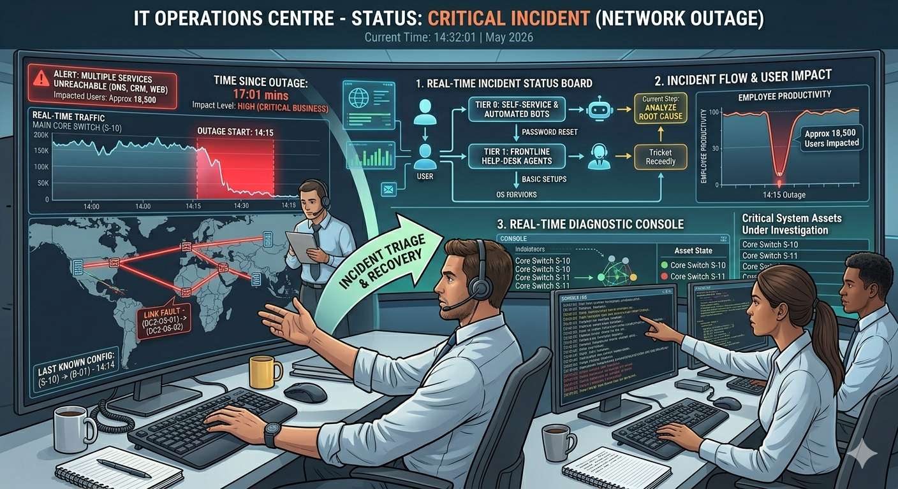

From Firefighting to Resilience: Essential IT Support Strategies for Modern Organizations
By Badri Tamang | Published: May 2026
When business systems fail, organizations immediately turn to their IT support teams for answers. For decades, IT support success was measured almost entirely by speed — how quickly tickets were closed, how fast systems were restored, and how rapidly temporary fixes could be deployed.
That traditional “firefighting” approach is no longer enough in modern enterprise environments. Today’s businesses operate across highly interconnected ecosystems of cloud platforms, remote devices, automated workflows, AI-powered systems, and distributed infrastructures.
In this environment, a single unresolved technical issue can rapidly escalate into operational downtime, productivity loss, financial disruption, and serious cybersecurity exposure.
Modern IT support is no longer about reacting to failures — it is about engineering resilience before failures occur.
Sustainable IT operations require organizations to move beyond reactive troubleshooting and adopt resilient support architectures focused on prevention, visibility, automation, and long-term operational stability.
1. Building a Multi-Tiered IT Support Architecture
Highly effective IT support environments rely on structured escalation frameworks that divide technical responsibilities based on complexity and specialization.
This layered model ensures that senior engineers remain focused on critical infrastructure problems instead of spending valuable time resolving repetitive low-level user requests.
Tier 0: Self-Service and Automation
The first layer of modern IT support is automation. Tier 0 systems use self-service portals, AI-powered assistants, centralized documentation, and automated workflows to help users resolve common issues independently.
Password resets, MFA synchronization, software onboarding, and access requests can often be completed without human intervention, dramatically reducing ticket volume.
Organizations implementing mature self-service models frequently eliminate thousands of repetitive support requests every month, allowing support teams to focus on more strategic technical operations.
Tier 1: Frontline Helpdesk Operations
When users cannot resolve issues independently, requests move to frontline support personnel.
Tier 1 teams handle common operational issues such as account troubleshooting, software installation errors, local device configuration problems, printer connectivity issues, and standard application support.
Tier 2: Specialized Technical Support
More complex technical failures are escalated to Tier 2 specialists, including systems administrators, infrastructure engineers, and network support teams.
These teams investigate operating system failures, network routing issues, virtualization problems, and deeper infrastructure-level disruptions.
Tier 3 and Tier 4: Senior Engineering and Vendors
The highest escalation layers involve senior architects, software developers, cybersecurity engineers, and external vendors responsible for core platform modifications and enterprise-level incident response.
These teams manage severe outages, cloud infrastructure failures, major security incidents, and underlying application defects requiring direct source-code or platform-level intervention.
2. Transitioning from Ticket Speed to User Experience
Traditional IT support models relied heavily on operational metrics such as First Response Time (FRT) and ticket closure speed.
While these metrics remain useful, they often fail to measure the actual impact technology problems have on employee productivity and business continuity.
A ticket may appear “resolved” on a dashboard while the underlying issue remains unresolved, causing repeated disruptions and long-term user frustration.
Experience Level Agreements (XLAs)
Modern organizations are increasingly replacing traditional Service Level Agreements (SLAs) with Experience Level Agreements (XLAs).
Instead of measuring how quickly a ticket closes, XLAs evaluate how effectively technology services support real employee productivity and operational continuity.
The ultimate goal of resilient IT support is not simply resolving incidents quickly — it is minimizing the frequency of incidents altogether.
3. Eliminating Tool Sprawl Through Unified Platforms
One of the biggest operational challenges facing modern IT teams is tool fragmentation.
Many organizations operate separate monitoring systems, ticketing platforms, inventory trackers, cloud dashboards, and security tools that cannot communicate effectively with one another.
During critical outages, technicians waste valuable time jumping between disconnected platforms searching for visibility into the root cause of the failure.
Centralized Service Management
Modern support operations require unified service management platforms integrated with Configuration Management Databases (CMDBs).
A CMDB provides a centralized operational map of all infrastructure assets, including laptops, servers, applications, cloud resources, and network dependencies.
When incidents occur, support teams can immediately identify affected systems, trace dependencies, isolate failures, and restore services far more efficiently.
Operational Visibility
Visibility is one of the most critical components of resilient IT support. Organizations cannot protect, optimize, or troubleshoot systems they cannot fully observe.
Unified monitoring platforms significantly reduce diagnostic delays, improve incident response quality, and strengthen long-term operational stability.
4. Scaling IT Support with Organizational Growth
A major operational mistake made by growing businesses is failing to scale support staffing alongside workforce expansion and infrastructure complexity.
Understaffed support teams quickly become overwhelmed, causing ticket backlogs, delayed system maintenance, slower incident response, and increased operational risk.
Operational Staffing Ratios
Healthy staffing ratios vary depending on organization size, infrastructure complexity, security requirements, and workforce distribution models.
Small businesses often rely on highly personalized support models, while large enterprises achieve efficiency through automation, standardization, and mature self-service ecosystems.
Organizations operating across hybrid environments, multiple operating systems, or regulated industries typically require lower user-to-support ratios to maintain operational resilience and security compliance.
The Path Forward: Automation, Visibility, and Resilience
The true value of modern IT support is not measured by how many tickets are closed each day.
Real operational maturity comes from building stable, resilient environments where failures become increasingly rare and employee productivity remains uninterrupted.
By implementing layered support architectures, prioritizing user experience, consolidating operational tools, and strengthening infrastructure visibility, organizations transform IT support from a reactive cost center into a strategic driver of operational continuity.
Design your support operations intentionally, automate repetitive workloads wherever possible, and ensure your technology ecosystem continuously serves the people who depend on it every day.


3 Comments
Daniel Brooks
Excellent breakdown of how modern IT support is evolving beyond simple ticket management. The emphasis on resilience and automation is extremely relevant.
Priya Sharma
The section on unified monitoring platforms and CMDB integration really highlights why operational visibility is critical in enterprise environments.
Michael Tan
Strong article. Moving from reactive firefighting to proactive resilience engineering is exactly the direction modern IT operations need to take.